1. Pressure Fundamentals — Quick Reference
Definition, Units & Pressure Terminology| Concept | Definition / Explanation | Formula / Unit |
|---|---|---|
| Pressure | The normal force acting per unit area. | \( P = \dfrac{F}{A} \) |
| Force (Fn) | The normal (perpendicular) force acting on the surface. | N |
| Area (A) | The surface area over which the force acts. | m² |
| SI Unit of Pressure | The pascal (Pa). | \( 1\ \text{Pa} = 1\ \text{N/m}^2 \) |
| Bar | Common non-SI pressure unit. | \( 1\ \text{bar} = 10^5\ \text{Pa} = 14.5\ \text{psi} \) |
| Standard Atmosphere | Standard atmospheric pressure, expressed in several units. | \( 1\ \text{atm} = 101325\ \text{Pa} = 101.325\ \text{kPa} = 1.01325\ \text{bar} = 760\ \text{mmHg} = 760\ \text{torr} \) |
| Atmospheric Pressure | Pressure exerted by the surrounding atmosphere (ambient pressure). | \( P_{atm} \approx 1\ \text{atm} \) (standard value) |
| Absolute Pressure | Pressure measured relative to absolute zero (complete vacuum). | \( P_{abs} = P_{atm} + P_{gauge} \) |
| Gauge Pressure | Pressure measured relative to atmospheric pressure. | \( P_{gauge} = P_{abs} - P_{atm} \) |
| Vacuum Pressure | Pressure below atmospheric pressure; vacuum = negative gauge pressure. | \( P_{vac} = -P_{gauge} = P_{atm} - P_{abs} \) |
| Differential Pressure | Pressure measured between two different ports. | \( \Delta P = P_1 - P_2 \) |
| STP | Standard Temperature and Pressure; usually 1 atm and 0 °C. | 1 atm, 0 °C (273.15 K) |
الـ Pressure بيعبّر عن مقدار الـ Normal Force المؤثرة على وحدة الـ Area. يعني لو عندك Force معينة بتأثر على Area صغيرة، الـ Pressure هيكون أكبر من نفس الـ Force لو أثرت على Area أكبر. من العلاقة \( P \propto \frac{1}{A} \) بشرط إن الـ Force تفضل ثابتة: لما الـ Area تقل الـ Pressure يزيد، ولما الـ Area تزيد الـ Pressure يقل.
وحدة الـ Pressure في الـ SI Unit هي الـ Pascal (Pa)، وفيه وحدات تانية مهمة زي الـ kPa والـ bar والـ atm والـ mmHg والـ Torr والـ psi. خلي بالك إن الـ bar والـ atm وحدتين مختلفتين، حتى لو قيمتهم قريبة من بعض؛ في المسائل لازم تستخدم التحويل الصحيح حسب الوحدة المطلوبة.
عشان نفهم أجهزة الـ Pressure Measurement، لازم نفرّق بين أنواع الـ Pressure المختلفة؛ لأن كل نوع بيعبّر عن حاجة مختلفة:
- Atmospheric Pressure: هو الـ Pressure الناتج عن Weight الـ Air الموجود في الـ Atmosphere، وبيتغير من مكان للتاني ومع الـ Altitude والظروف الجوية. القيمة \( 101325\ \text{Pa} \) Standard Reference Value، مش معناها إن الـ Atmospheric Pressure لازم يكون نفس القيمة في كل مكان وكل وقت.
- Absolute Pressure: هو الـ Pressure المقاس بالنسبة للـ Perfect Vacuum، اللي الـ Pressure بتاعه يساوي Absolute Zero؛ يعني الـ Absolute Zero Pressure هو نقطة البداية للـ Measurement.
- Gauge Pressure: هو الـ Pressure المقاس بالنسبة للـ Atmospheric Pressure المحيط. أغلب الأجهزة الشائعة زي الـ Pressure Gauge بتعرض الـ Gauge Pressure مش الـ Absolute Pressure. لو الـ System Pressure أكبر من الـ Atmospheric Pressure بيكون الـ Gauge Pressure Positive، ولو أقل ممكن تكون قراءة الـ Gauge Pressure Negative، وده بيعبّر عن حالة Vacuum بالنسبة للـ Atmospheric Pressure. مثال: لو \( P_{abs} = 200\ \text{kPa} \) و\( P_{atm} = 100\ \text{kPa} \) يبقى \( P_g = 200 - 100 = 100\ \text{kPa} \)؛ ولو \( P_g = 50\ \text{kPa} \) يبقى \( P_{abs} = 100 + 50 = 150\ \text{kPa} \).
- Vacuum Pressure: بيعبّر عن مقدار انخفاض الـ Pressure عن الـ Atmospheric Pressure، وبيكون Positive لو الـ Absolute Pressure أقل من الـ Atmospheric Pressure.
- Differential Pressure: هو الفرق بين الـ Pressure عند نقطتين، ومش لازم يعبّر عن الـ Absolute Pressure عند أي نقطة؛ هو بيعبّر عن الفرق بين الاثنين بس، وده مهم في الـ Differential Pressure Instruments زي الـ Differential Manometer. لو عارف الـ Pressure عند نقطة والـ Differential Pressure، تقدر تحسب الـ Pressure عند النقطة التانية؛ مثلًا \( P_1 = 150\ \text{kPa} \) و\( P_1 - P_2 = 40\ \text{kPa} \) يبقى \( P_2 = 150 - 40 = 110\ \text{kPa} \). لكن لو مش عارف أي Pressure من الاثنين، مجرد معرفة الفرق مش كفاية لتحديد كل Pressure بصورة منفصلة.
- STP: اختصار Standard Temperature and Pressure. في التعريف التقليدي الشائع في مسائل الـ Gas هو \( T = 0^\circ\text{C} = 273.15\ \text{K} \) و\( P = 1\ \text{atm} \)، لكن بعض المراجع بتستخدم تعريفات مختلفة حسب السياق؛ فاعتمد على التعريف اللي محدده السؤال أو المرجع المستخدم في المقرر.
Keep the three references separate: absolute, gauge and vacuum pressure each use a different zero. Also, bar and atm are different units (1 atm = 1.01325 bar); do not round one into the other unless the question says so.
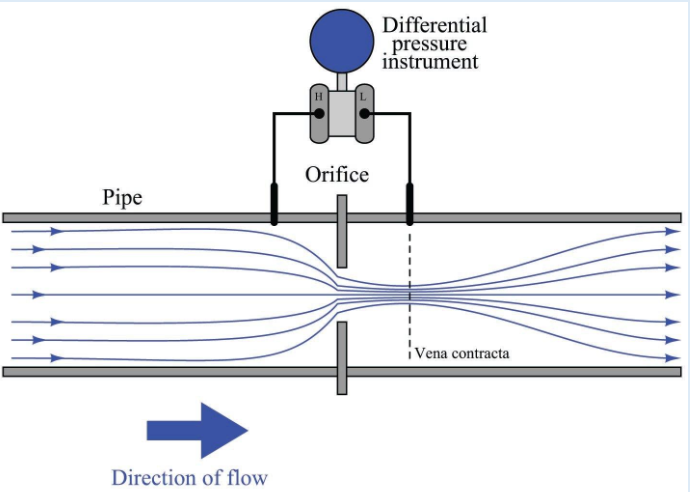
2. Solved Numerical Problems — AI-Generated Applications
Practice applications of the formulas presented in this lectureNote: The following solved examples are AI-generated applications created solely to demonstrate how to apply the formulas and laws presented in this lecture. These examples are not included in the professor's original lecture PDF and were not provided or explained by the professor.
Examples 1 and 2 are below. Examples 3 and 4 appear beside the topics they apply (inclined manometer, Pitot-static tube) and carry the same label.
Topic: Pressure Calculation & Area Effect
(This is an additional application of the lecture’s formula. It was not mentioned in the lecture or provided by the professor. View it only if you would like to see how to apply the formula.)
(a) Calculate the resulting pressure in kPa and bar.
(b) If the piston area is reduced to \( A_2 = 0.01 \text{ m}^2 \) under the same force, determine the new pressure and compare the two values.
Step-by-step solution
Relevant formula: \[ P = \frac{F}{A} \]Substitution and calculation: \[ P_1 = \frac{15{,}000\ \text{N}}{0.05\ \text{m}^2} = 300{,}000\ \text{Pa} = 300\ \text{kPa} \]
Relevant formula: \[ 1\ \text{bar} = 10^5\ \text{Pa} \]Substitution and calculation: \[ P_1 = \frac{300{,}000}{10^5} = 3.0\ \text{bar} \]
Relevant formula: \[ P = \frac{F}{A} \]Substitution and calculation: \[ P_2 = \frac{15{,}000\ \text{N}}{0.01\ \text{m}^2} = 1{,}500{,}000\ \text{Pa} = 1{,}500\ \text{kPa} = 15.0\ \text{bar} \]
Relevant formula: \[ P \propto \frac{1}{A}\ \ (F\ \text{constant}) \]Substitution and calculation: \[ \frac{P_2}{P_1} = \frac{A_1}{A_2} = \frac{0.05}{0.01} = 5 \]The area fell to one fifth at constant force, so the pressure is five times larger.
Topic: Pressure Terminology Conversions
(This is an additional application of the lecture’s formula. It was not mentioned in the lecture or provided by the professor. View it only if you would like to see how to apply the formula.)
(a) A pressure gauge attached to a boiler reads \( 3.2 \text{ bar} \). Find the absolute pressure inside the boiler in kPa.
(b) A vacuum chamber exhibits a vacuum pressure of \( 40 \text{ kPa} \). Determine the absolute pressure in the chamber in kPa.
Step-by-step solution
Relevant formula: \[ 1\ \text{atm} = 101.325\ \text{kPa} = 760\ \text{mmHg} \]Substitution and calculation: \[ P_{atm} = 750\ \text{mmHg} \times \frac{101.325\ \text{kPa}}{760\ \text{mmHg}} \approx 99.99\ \text{kPa} \approx 100\ \text{kPa} \](Rounded to 100 kPa for the next steps.)
Relevant formula: \[ 1\ \text{bar} = 10^5\ \text{Pa} = 100\ \text{kPa} \]Substitution and calculation: \[ P_g = 3.2\ \text{bar} = 3.2 \times 100 = 320\ \text{kPa} \]
Relevant formula: \[ P_{abs} = P_{atm} + P_g \]Substitution and calculation: \[ P_{abs} = 100 + 320 = 420\ \text{kPa} \]
Relevant formula: \[ P_{vac} = P_{atm} - P_{abs}\ \Rightarrow\ P_{abs} = P_{atm} - P_{vac} \]Substitution and calculation: \[ P_{abs} = 100 - 40 = 60\ \text{kPa} \]
3. Gravitational Methods of Pressure Measurement
Gravitational Sensing Methods: Hydrostatic Column Balancingفيه طرق مختلفة لقياس الـ Pressure، ومن الطرق الأساسية الـ Gravitational Methods، وهي طرق بتعتمد على تأثير الـ Gravity وWeight الـ Liquid Column. الفكرة الأساسية إن Weight الـ Liquid الموجود في Column له Height معين بيولّد Pressure Difference بين مستويين، والعلاقة الأساسية لـ Pressure الـ Liquid Column هي:
Where: \( \rho \) = Fluid density (\(\text{kg/m}^3\)), \( g \) = Gravitational acceleration (\(9.81 \text{ m/s}^2\)), \( h \) = Vertical column height (m).
العلاقة دي مهمة جدًا؛ لأنها بتربط الـ Pressure بـ Density الـ Liquid وبالـ Height. عند ثبات \( g \): \( P \propto \rho h \)، يعني الـ Pressure بيتناسب طرديًا مع الـ Density ومع الـ Vertical Height للـ Column. لو الـ Density زادت فالـ Pressure الناتج عن نفس الـ Height يزيد، ولو الـ Height زاد مع ثبات الـ Density فالـ Pressure يزيد برضه. ومن هنا نفهم ليه اختيار الـ Liquid المستخدم في أجهزة الـ Pressure Measurement مهم، وليه الـ Density بتأثر على الـ Height المطلوب للـ Column.
3.1 Mercury Barometer
"It is used to measure atmospheric pressure. The ambient pressure is used to predict short-term changes in the weather. Ambient pressure may also affect some experimental results."
الـ Barometer جهاز بيُستخدم لقياس الـ Atmospheric Pressure، ومن الأنواع المعروفة الـ Mercury Barometer اللي بيعتمد على Column من الـ Mercury داخل Tube مناسبة. الفكرة الأساسية:
- بنستخدم Tube مملوءة بالـ Mercury.
- بنقلب الـ Tube داخل وعاء فيه Mercury.
- بنسمح للـ Mercury داخل الـ Tube إنه يستقر عند Height معين.
- بيتكوّن Vacuum تقريبًا أعلى الـ Mercury Column، وده معروف باسم Torricellian Vacuum.
- الـ Atmospheric Pressure المؤثر على سطح الـ Mercury في الوعاء بيوازن Weight الـ Mercury Column داخل الـ Tube.
عند الـ Equilibrium بيكون \( P_{atm} = \rho_{Hg}\, g\, h \). وفي الـ Standard Conditions الـ Height بيكون تقريبًا \( h = 760\ \text{mm} = 76\ \text{cm} \)، وبالتالي \( 1\ \text{atm} \approx 760\ \text{mmHg} \). الـ \( 76\ \text{cm} \) هنا هي الـ Vertical Height للـ Mercury Column، مش طول الـ Tube بالكامل.

اختيار الـ Mercury مرتبط بـ Density بتاعه العالية. من العلاقة \( P = \rho g h \) لو الـ Pressure ثابت يبقى \( h = \frac{P}{\rho g} \)، يعني كل ما الـ Density تزيد، الـ Height المطلوب لمعادلة نفس الـ Pressure يقل. الـ Mercury Density بتاعه عالية مقارنة بالـ Water؛ علشان كده يقدر يوازن الـ Atmospheric Pressure بـ Column الـ Height بتاعه حوالي \( 76\ \text{cm} \)، بينما استخدام Liquid أقل Density زي الـ Water بيتطلب Column أعلى بكتير لنفس الـ Pressure (حوالي \( 10.3\ \text{m} \)، مقابل \( \rho_{Hg} \approx 13{,}600\ \text{kg/m}^3 \) للـ Mercury). إذن اختيار الـ Mercury بيقلل الـ Height المطلوب للـ Column، وده بيخلي الجهاز أكتر عملية في الـ Design.
من استخدامات الـ Barometer متابعة التغيرات في الـ Atmospheric Pressure، وده ممكن يساعد في فهم تغيرات الطقس؛ فالتغيرات دي من المؤشرات المستخدمة في التنبؤ بالطقس لكنها مش العامل الوحيد.
3.2 Manometers
"It is used to measure pressure differential. The manometric fluid may be mercury, water or oil. The head (h) has to be carefully measured."
الـ Manometer جهاز بيُستخدم لقياس الـ Pressure أو الـ Pressure Difference عن طريق Liquid Column (Manometric Fluid). الفكرة الأساسية إن الـ Pressure عند نفس الـ Horizontal Level داخل نفس الـ Liquid المتصل، في حالة الـ Static Equilibrium، بيكون متساويًا. وكمان الـ Pressure Difference بين Two Vertical Levels داخل Static Liquid بيعتمد على الـ Density وفرق الـ Vertical Height: \( \Delta P = \rho g h \). أما في الـ Differential Manometer اللي فيه Manometric Fluid مختلف عن الـ Liquid الموجود في الخط، فالـ Equation بتعتمد على ترتيب الـ Liquids وDensities ومستوياتها:
Where: \( \rho_m \) = Density of manometric fluid, \( \rho_f \) = Density of flowing line fluid, \( h \) = Vertical level difference.
الـ Equation دي مش Rule تُستخدم بنفس الصورة في كل شكل من أشكال الـ Manometer. في المسائل لازم تحدد اتجاهات الـ Columns ومستويات الـ Liquids والـ Density بتاعة كل Liquid، وبعدها تكتب الـ Pressure Balance من نقطة للتانية. الإشارة بتتحدد حسب اتجاه الحركة في الـ Liquid Column وحسب أي Pressure أكبر.
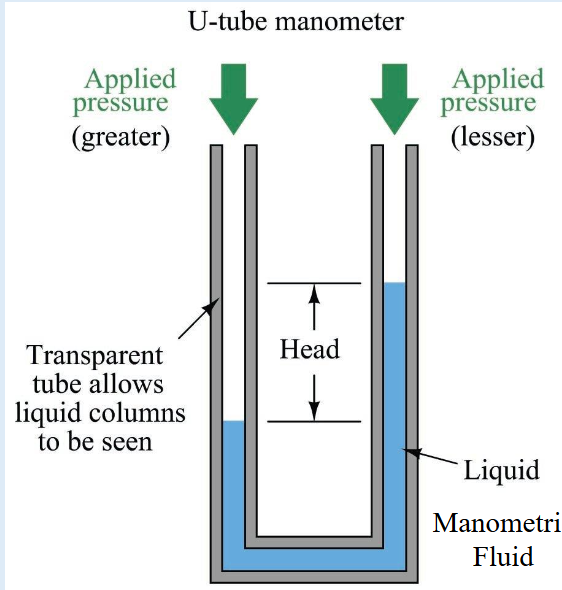

الـ Differential Manometer بيُستخدم لقياس الـ Pressure Difference بين نقطتين: فيه طرف متصل بالنقطة الأولى وطرف متصل بالنقطة التانية، والـ Liquid الموجود داخل الجهاز بيتحرك لحد ما يوصل لحالة Equilibrium. لو الـ Pressure عند نقطة أكبر من الـ Pressure عند النقطة التانية، فالفرق ده بيظهر في اختلاف مستويات الـ Liquid داخل الـ Tube؛ فالـ Height مش مجرد Reading شكلية، ده جزء من العلاقة اللي بنحسب بيها الـ Pressure Difference.
الفكرة الأساسية: الـ Manometer مش بيقيس الـ Pressure من شكل الـ Tube وحده؛ هو بيعتمد على الـ Pressure Balance وWeight الـ Liquid Column. الـ Pressure Difference هو اللي بيحدد فرق المستويات بعد ما الـ Liquid يوصل لـ Equilibrium.
سؤال للفهم: هل الـ Liquid بيتحرك دائمًا من الـ High Pressure للـ Low Pressure؟ مش كفاية نحفظ الجملة دي من غير ما نفهم الرسم. لما يكون فيه Pressure Difference، الـ Liquid بيتحرك نتيجة عدم الـ Equilibrium، وتستمر الحركة لحد ما يتحقق الـ Hydrostatic Equilibrium. وعلشان نحدد أي Pressure أكبر بنحلل مستويات الـ Liquids وDensities ونوازن الـ Pressure عند نقاط مناسبة؛ ما ينفعش نحدد إن الـ Pressure عند النقطة الأولى أكبر لمجرد إننا شايفين مستوى معين أعلى أو أقل، من غير ما نعرف نوع الـ Liquid وترتيب الـ Columns. وكمان لازم نفرّق بين حركة الـ Liquid داخل الـ Manometer بسبب الـ Pressure Difference وبين اتجاه حركة الـ Fluid داخل الـ Pipe؛ دول مش نفس السؤال.
Errors in Manometer Measurements
أي جهاز قياس ممكن يكون فيه Measurement Errors، والـ Manometer مش استثناء. قراءة الـ Pressure Difference بتعتمد على Accuracy قياس \( h \) وعلى صحة تركيب الجهاز وخواص الـ Liquid، ومن أهم مصادر الـ Error:
- Parallax Error: Reading Error في موضع مستوى الـ Liquid بسبب زاوية النظر. لو عينك مش في الموضع المناسب بالنسبة للـ Scale ومستوى الـ Liquid (عند الـ Meniscus)، ممكن تقرأ Height مختلف عن الـ Height الحقيقي؛ ولتقليل الـ Error اقرأ مستوى الـ Liquid من زاوية النظر الصحيحة.
- Tubes Not Perfectly Vertical: لو الـ Tube المفروض تكون Vertical لكنها مائلة، فالـ Reading المقاس على امتداد الـ Tube لا يساوي بالضرورة الـ Vertical Height \( h \) المطلوب في الـ Equation؛ لأن الـ Hydrostatic Pressure بيعتمد على الـ Vertical Height وليس طول المسار المائل.
- Density Changes with Temperature (\( \rho = f(T) \)): Density الـ Liquid بتعتمد على الـ Temperature. لو الـ Temperature اتغيرت، الـ Density ممكن تتغير، وده بيؤثر على العلاقة بين الـ Pressure Difference والـ Height Difference. مثلًا لو استخدمنا Nominal Density أو قيمة محسوبة عند Temperature مختلفة عن Temperature التجربة، فالحساب ممكن ينتج عنه Systematic Error.
- Random vs. Systematic Errors: الـ Random Error بتتغير قيمته أو اتجاهه من Reading لـ Reading، زي اختلاف قراءة مستوى الـ Liquid شوية بسبب صعوبة تحديده بالظبط. أما الـ Systematic Error فبيكون ناتج عن سبب ثابت أو انحياز في الـ Measurement، زي تركيب الـ Tube بزاوية غير صحيحة أو استخدام قيمة Density غير مناسبة في الحساب. لو الـ Error ثابت الاتجاه، تكرار الـ Measurement وحده مش كفاية لإزالته؛ لازم نحدد سببه ونعالجه.
قبل إجراء التجربة لازم نتأكد من:
- تركيب الجهاز بصورة صحيحة.
- قراءة مستوى الـ Liquid من زاوية مناسبة لتقليل الـ Parallax Error.
- تحديد فرق الـ Vertical Height الصحيح.
- مراعاة الـ Temperature بتاعة الـ Liquid عند الحاجة.
- استخدام Density مناسبة للـ Liquid.
- فحص الجهاز والتأكد من ملاءمته للـ Measurement المطلوب.

Two level values have to be read to evaluate h.
Selecting the Manometric Fluid & Inclined Manometer
عند قياس Small Pressure Differences ممكن نستخدم Manometric Fluid Density بتاعه منخفضة. من العلاقة \( \Delta p = (\rho_m - \rho_f)\, g\, h \) نلاحظ إنه عند ثبات الـ Pressure Difference والـ Gravity وDensity الـ Liquid التاني، فتقليل فرق الـ Density بيؤدي إلى زيادة فرق الـ Height المطلوب لتحقيق نفس الـ Pressure Difference. لكن اختيار الـ Liquid مش معناه إننا نختار أقل Density ممكنة من غير شروط؛ لازم نراعي الـ Liquids الموجودة في الجهاز، والـ Expected Pressure Range، وإمكانية الحصول على Reading واضحة:
For small pressure differences, use a manometric fluid of low density. But h is still small.
\[ h = \frac{\Delta p}{\rho \cdot g} \implies h \propto \frac{1}{\rho} \]
Case 1 — High-Density Manometric Fluid: لو استخدمنا Liquid Density بتاعه عالية، هيكون الـ Height المطلوب أقل لنفس الـ Pressure Difference، وده ممكن يكون مناسبًا لما الـ Pressure Difference يكون كبير ونحتاج نقلل الـ Height.
Case 2 — Low-Density Manometric Fluid: لو استخدمنا Liquid Density بتاعه أقل، هيكون الـ Height المطلوب أكبر لنفس الـ Pressure Difference، وده ممكن يساعد على إظهار Small Pressure Differences على هيئة فروق Height أكبر، بشرط إن الـ Design مناسب. لكن الـ Height الكبير جدًا ممكن يكون غير عملي، وعلشان كده بنختار الـ Liquid بناءً على الـ Expected Pressure Range وشكل الجهاز وظروف الـ Measurement.
مثال: لو الـ Pressure Difference ثابت واستخدمنا Liquid Density بتاعه نص Density الـ Liquid الأصلي، فالـ Height المطلوب بيتضاعف (في حالة Single Liquid Column).
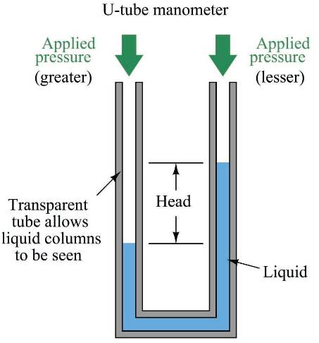
ولو الـ Pressure Difference صغير جدًا، مش بالضرورة يكفي إننا نغيّر الـ Manometric Fluid؛ حتى بعد اختيار Liquid مناسب ممكن يفضل فرق الـ Height صغير وصعب القراءة. وده سبب الانتقال لتصميمات ترفع قابلية ملاحظة التغيرات الصغيرة، زي الـ Inclined Manometer:
"Used to increase sensitivity" — الـ Inclined Manometer هو Manometer بتكون الـ Tube بتاعة الـ Reading فيه مائلة بدل ما تكون Vertical. الغرض الأساسي منه هو Increase the Sensitivity، أي زيادة مقدار الحركة المقروءة على الـ Scale مقابل تغير صغير في الـ Pressure. لو \( L \) هو طول الحركة المقروءة على امتداد الـ Tube، و\( h \) هو الـ Vertical Height المقابل، و\( \theta \) هي زاوية الميل بالنسبة للـ Horizontal، فإن:
إذن الـ Reading \( L \) مش هي نفسها الـ Vertical Height \( h \)؛ لازم نحوّل الـ Reading إلى Vertical Height قبل استخدامها في الـ Equation بتاعة الـ Pressure.
⚠️ "Take care of the angle — Systematic Error": لازم نعرف زاوية الميل \( \theta \) بالظبط؛ لأن أي Error في الزاوية بينتقل إلى حساب \( h \)، ثم إلى حساب الـ Pressure Difference.

عند الزوايا الصغيرة، تكون المسافة المقروءة على امتداد الـ Tube (\( L \)) أكبر من الـ Vertical Height المقابل لها (\( h \))؛ لذلك يصبح تغير مستوى الـ Liquid أسهل في الملاحظة عند قياس Small Pressure Differences. لكن لازم نعرف زاوية الميل بالظبط؛ لأن الـ Error في \( \theta \) بينتقل لحساب \( h \) ثم لحساب الـ Pressure Difference.
سؤال: هل استخدام الـ Tube المائلة بيلغي الـ Errors؟ لأ. هو بيحسّن قابلية قراءة الحركة الصغيرة، لكنه مش بيلغي Reading Error ولا Error قياس الزاوية. بل إن زاوية الميل نفسها ممكن تكون مصدر Systematic Error لو القيمة المستخدمة في الحساب غير صحيحة.
Well-Type Manometer
في بعض تصميمات الـ Manometer لازم نقرأ Two Different Liquid Levels علشان نحسب \( h \). لو الـ Reading الأولى \( h_1 \) والتانية \( h_2 \)، فإن فرق الـ Height بيتحدد من موضعي المستويين وفقًا لتعريفهما في الرسم، وفي الحالة الشائعة: \( h = |h_1 - h_2| \). قراءة مستويين معناها وجود Readings ممكن أخطاؤهما تدخل في حساب فرق الـ Height.
الـ Well-Type Manometer فيه الـ Well / Reservoir كبير نسبيًا متصل بـ Tube القياس. طبقًا للسلايد، الـ Well بيتصمم بحيث إن تغير مستوى الـ Liquid فيه يكون Negligible تقريبًا، أو يكون الـ Scale معوّضًا عن التغير ده. الفكرة إن Cross-Sectional Area الـ Well كبيرة مقارنة بـ Cross-Sectional Area الـ Tube، وبالتالي تغير مستوى الـ Liquid في الـ Well بيكون صغير نسبيًا لما كمية من الـ Liquid تنتقل للـ Tube أو منها، فبنقدر ناخد الـ Reading من Tube واحدة بس.
"Take care of well diameter and indicator angle (90°)"
نقطة مهمة من السلايد: لازم نراعي Diameter الـ Well وكمان زاوية الـ Indicator (\( 90^\circ \) في الـ Design المعروض)؛ يعني هندسة الجهاز والـ Scale جزء من صحة الـ Reading، مش مجرد تفاصيل شكلية.
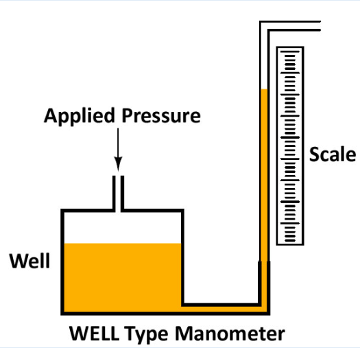
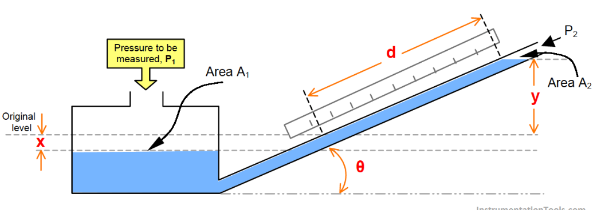
Inclined Well-Type Manometer: الـ Inclined Well-Type Manometers ممكن تُستخدم كمان، والـ Design بتاعها بيجمع بين فكرتين: (1) استخدام الـ Well لتقليل تأثير تغير مستوى الـ Liquid داخل الـ Reservoir على الـ Reading أو تعويضه في الـ Scale. (2) استخدام الـ Tube المائلة لزيادة الحركة المقروءة مقابل تغير صغير في الـ Pressure. وبالتالي لازم نراعي هندسة الـ Well وزاوية الـ Tube، ونستخدم الـ Geometric Relation الصحيحة لتحويل الـ Reading إلى الـ Vertical Height المناسب.
- Sensitivity: مقدار التغير في الـ Output مقابل تغير صغير في الكمية المقاسة، \( S = \frac{\text{Change in Output}}{\text{Change in Input}} \). في الـ Manometer نفهمها على إنها مقدار التغير في الـ Reading الناتج عن تغير صغير في الـ Pressure.
- Accuracy: مدى قرب الـ Reading من القيمة الحقيقية. يعني ممكن جهاز يكون Sensitive جدًا للتغيرات الصغيرة، لكن الـ Reading بتاعه ما تكونش Accurate لو فيه Error في الـ Calibration أو تركيب الجهاز.
هل الـ Well-Type والـ Inclined Manometer بيحققوا نفس الغرض بالضبط؟ مش بالضرورة:
- الـ Inclined Manometer: هدفه الأساسي زيادة الـ Sensitivity.
- الـ Well-Type Manometer: بيستخدم الـ Well الكبير لتقليل تأثير تغير مستواه على الـ Reading أو لتعويض التغير ده في الـ Scale؛ وده بيبسّط تحديد الـ Height وقد يقلل بعض Reading Errors، لكنه لا يضمن وحده زيادة الـ Sensitivity أو إزالة كل الـ Errors.
- الـ Inclined Well-Type Manometer: بيجمع بين الفكرتين، مع مراعاة هندسة الـ Well وزاوية الـ Tube.
تحسين الـ Sensitivity لا يعني تلقائيًا تحسين الـ Accuracy. ولا يصح نفترض إن كل Well-Type Manometer له نفس الهندسة من غير الرجوع إلى الرسم.
Advantages & Limitations of Manometers
✅ Advantages
- Simple: مبدأ العمل بسيط؛ لأنه بيعتمد على الـ Pressure Balance وWeight الـ Liquid Column.
- Inexpensive: تكلفته منخفضة نسبيًا؛ ممكن تنفيذ الـ Pressure Measurement بـ Tube وLiquid مناسبين من غير Electronic System معقد.
- Can be highly sensitive: ممكن يكون عالي الـ Sensitivity، خصوصًا مع الـ Inclined Design.
- Standard: بيعتبر مرجعًا فيزيائيًا مباشرًا ولا يحتاج لـ Calibrations معقدة.
❌ Limitations
- Poor Dynamic Response: الاستجابة للتغيرات السريعة في الـ Pressure ضعيفة نسبيًا؛ لأن الـ Liquid محتاج وقت علشان يتحرك ويوصل لحالة Equilibrium جديدة، فلو الـ Pressure بيتغير بسرعة كبيرة ممكن الـ Reading ما تلحقش التغير الفعلي.
- No Remote Sensing: في الاستخدام المعتاد لازم يكون فيه اتصال مادي بين الـ Manometer والنقطة المراد قياس الـ Pressure عندها؛ فمفيش Remote Sensing ولا Electrical Signal للمراقبة أو التحكم عن بُعد.
- Limited Pressure Range: الـ Height المطلوب للـ Liquid Column بيزيد كل ما زاد الـ Pressure Difference، وده بيفرض حدودًا عملية على أبعاد الجهاز. السلايد بيذكر إن المدى العملي عادةً لا يتجاوز 7 bar؛ ودي معلومة مرتبطة بالمدى العملي المذكور في المحاضرة، مش حد مطلق لكل Design.
- Glass Fragility & Vapors: قابلية كسر الـ Glass Tubes وسمية أبخرة الـ Mercury.
ليه صعب نستخدم الـ Manometer عند الـ High Pressures؟ لأن الـ Pressure Difference مرتبط بـ Height الـ Liquid Column (\( \Delta p = \rho g h \) أو \( \Delta p = (\rho_m - \rho_f)\, g\, h \))؛ فلما الـ Pressure يزيد قد نحتاج Liquid Column أطول، وده بيخلي الجهاز كبير وغير عملي. اختيار Liquid Density بتاعه أعلى قد يقلل الـ Height المطلوب، لكنه لا يلغي كل القيود العملية.
Topic: Inclined Manometer Calculation
(This is an additional application of the lecture’s formula. It was not mentioned in the lecture or provided by the professor. View it only if you would like to see how to apply the formula.)
Step-by-step solution
Relevant formula: \[ h = L \sin\theta \]Substitution and calculation: \[ h = 120\ \text{mm} \times \sin 30^\circ = 120 \times 0.5 = 60\ \text{mm} = 0.06\ \text{m} \]
Relevant formula: \[ \Delta p = (\rho_m - \rho_f)\, g\, h \]Substitution and calculation: \[ \Delta p = (850 - 0) \times 9.81 \times 0.06 \approx 500.31\ \text{Pa} \]
Relevant formula: \[ \frac{L}{h} = \frac{1}{\sin\theta} \]Substitution and calculation: \[ \frac{L}{h} = \frac{1}{\sin 30^\circ} = 2 \]The liquid moves 120 mm along the scale for a 60 mm vertical head, so the inclination doubles the apparent sensitivity.
4. Dead Weight Tester
Primary Standard for Static Pressure Gauge Calibration"The Dead Weight Tester is a primary calibration apparatus based on Pascal's Law. It is used for static calibrations only, and can generate and measure extremely high pressures with exceptional accuracy."
الـ Dead Weight Tester جهاز بيُستخدم لعمل Calibration لأجهزة الـ Pressure Measurement والتحقق من صحة قراءاتها. فكرته إنه بيولّد Reference Pressure من Force معلومة بتؤثر على Area معلومة. النظام المعتاد بيتكون من:
- Piston and Cylinder
- Known Masses / Weights: بتتحط على الـ Piston.
- Pressure Fluid: Fluid بينقل الـ Pressure داخل النظام.
- Test Gauge: جهاز الـ Pressure المراد عمل Calibration له.
لما نحط Known Masses على الـ Piston، الـ Gravity بتأثر بـ Force على Area الـ Piston، والـ Pressure النظري الناتج بيتحسب من الـ Force مقسومة على الـ Area:

Where: \( p \) = Generated reference pressure (Pa), \( m \) = Total mass placed on the piston (kg), \( g \) = Local gravitational acceleration (\(\text{m/s}^2\)), \( A \) = Effective cross-sectional area of piston (\(\text{m}^2\)).
المعادلة دي بتوضح المبدأ الأساسي. أما الحساب الدقيق في التطبيق العملي، فقد يحتاج إلى مراعاة عوامل الـ Calibration والـ Design الخاصة بالجهاز، زي الـ Effective Area وظروف التشغيل.
لما نكون عايزين نعمل Calibration لجهاز Pressure:
- نوصّل الجهاز المراد اختباره بالـ Dead Weight Tester.
- نختار Known Masses ونحطها على الـ Piston.
- نحسب الـ Reference Pressure المتوقع باستخدام الـ Force والـ Area: \( p_{ref} = \frac{mg}{A} \).
- نقارن Reading الـ Pressure Gauge بالـ Reference Value.
- نكرر العملية عند قيم Pressure مختلفة ضمن مدى الـ Calibration المطلوب.
لو Reading الجهاز مختلفة عن الـ Reference Pressure، نقدر نحدد مقدار الـ Error عند نقطة الـ Calibration.
سؤال: ليه نستخدم Known Masses بدل ما نعتمد على Reading جهاز الـ Pressure نفسه؟ لأن الهدف هو الحصول على Reference Pressure يمكن حسابه من كميات معلومة، ثم استخدامه للمقارنة مع Reading الجهاز المراد اختباره. لو اعتمدنا على Reading الجهاز نفسه لتحديد الـ Pressure الصحيح، مش هنكون حققنا Independent Calibration المطلوبة.
Advantages:
- High Accuracy: ممكن نحصل على Reference Pressure Accurate لما نستخدم الجهاز بطريقة صحيحة ونعرف الـ Effective Area.
- Suitable for Calibration: مناسب لعمل Calibration لأجهزة الـ Pressure Measurement والتحقق من قراءاتها.
- Wide Usable Pressure Range: ممكن نختار Weights مناسبة لتوليد مستويات Pressure مختلفة ضمن مدى تصميم الجهاز.
Limitations of the Dead Weight Tester (Slide 17)
- Friction between Piston and Cylinder: الـ Friction بين الـ Piston والـ Cylinder بتقلل Accuracy نقل الـ Force، وللتغلب على ده بيتم تدوير الـ Piston أثناء أخذ الـ Reading لتحويل الـ Friction إلى Rotational Kinetic Friction.
- Poor Dynamic Response: الجهاز مناسب أساسًا لعمل Calibration للـ Pressure في ظروف Static أو شبه Static (Static Calibrations Only)، وما بيُستخدمش عادةً لتتبع تغيرات الـ Pressure السريعة لحظة بلحظة.
- Affected by Uncertainty in Gravitational Constant \( g \): الحساب بيعتمد على \( g \) والـ Effective Area \( A \)، ولذلك Accuracy القيم دي بتأثر في الـ Reference Pressure المحسوب؛ وأي اختلاف جغرافي في قيمة \( g \) بيأثر لو ما اتصححش.
- Practical Pressure Limits: المدى المتاح بيعتمد على Design الجهاز، وArea الـ Piston، والـ Weights اللي ممكن نستخدمها بأمان؛ ولا يصح نفترض إن كل Dead Weight Tester يوصل لنفس أقصى Pressure.
5. Mechanical Methods of Pressure Measurement
Mechanical Sensing Methods: Bourdon Tube, Diaphragms & Bellowsبعد الـ Dead Weight Tester ننتقل لعائلة تانية من أجهزة القياس: Mechanical Pressure Measurement Devices. الفكرة الأساسية إن الـ Pressure بيأثر على Mechanical Element قابل للـ Elastic Deformation (Elastic Element)، والـ Deformation ده بيدي Displacement أو Mechanical Motion ممكن نربطها بقراءة الـ Pressure. يعني الـ Pressure نفسه مش بيتحول مباشرةً لرقم على الـ Scale؛ بل بيسبب Deformation في الـ Sensing Element، وبعد كده الحركة بتنتقل لـ Pointer أو Mechanism تانية تعرض الـ Reading. ومن أمثلة الـ Mechanical Elements اللي بتتعامل مع الـ Pressure: Bourdon Tube وDiaphragm وBellows، وكل واحد منهم بيستخدم شكل Mechanical مختلف لتحقيق استجابة للـ Pressure:
لازم الـ Element يرجع تقريبًا لشكله الأصلي لما الـ Pressure يتشال، طالما اشتغل داخل حدود الـ Design. لو الـ Pressure سبب Plastic Deformation، العلاقة بين الـ Pressure والـ Displacement مش هترجع زي ما كانت، وده بيؤدي لـ Error في الـ Reading وقد يسبب تلف الـ Element. لذلك لازم نراعي الـ Elastic Limit، أي الحد اللي يقدر عنده الـ Element يتحمل الـ Deformation ويرجع لحالته الأصلية من غير Permanent Deformation.
5.1 Bourdon Tube
"Contains an elastic element that deforms under pressure creating a displacement which is transformed to mechanical linkages and then displayed on a dial. Due to its mechanical nature, it's not useful in case of dynamic pressure measurements. Avoid excessive input pressures in order to avoid plastic deformations (Systematic Error)."
"To vary the sensitivity, different types may be used. Note that: sensitivity is always inversely proportional to the range."

الـ Bourdon Tube من أشهر الـ Mechanical Elements لقياس الـ Pressure.
Construction: هو Elastic Tube، غالبًا بيكون منحني، والـ Cross-Section بتاعته مش دائرية تمامًا. أحد طرفيه متصل بالـ Pressure المراد قياسه، بينما الطرف التاني بيكون مغلق وحر الحركة. حركة الطرف المتحرك بتتوصل بـ Mechanical Mechanism زي الـ Linkage (وSector & Pinion) والـ Pointer لعرض الـ Reading على Scale.
Working Principle: لما الـ Pressure يدخل الـ Tube، الـ Walls بتاعتها بتتعرض لتأثير الـ Internal Pressure، فبيتغير شكل الـ Tube المنحنية شوية وينتج عن ده حركة الطرف الحر. الحركة بتنتقل للـ Pointer من خلال الـ Linkage Mechanism، فتظهر قراءة الـ Pressure على الـ Scale. يعني: \( \text{Pressure} \rightarrow \text{Tube Deformation} \rightarrow \text{Tip Displacement} \rightarrow \text{Pointer Movement} \). وفي النطاق التشغيلي المناسب ممكن نعمل Calibration للـ Pointer بحيث ترتبط حركته بقيمة الـ Pressure.
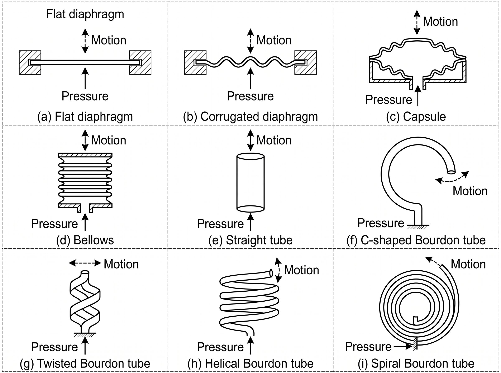
Static Characteristics: هي الخصائص المرتبطة بسلوك الجهاز لما الـ Pressure يكون ثابت أو بيتغير ببطء بما يسمح بالاستقرار. من المهم مراعاة العلاقة بين الـ Pressure والـ Displacement، ومدى تكرار الـ Reading عند نفس الـ Pressure، وحدود الـ Elastic Deformation. في النطاق المناسب ممكن نقرّب العلاقة بين الـ Pressure والـ Displacement بخط مستقيم لو ده مدعوم بـ Calibration للجهاز، لكن ما نفترضش Linearity تامة لكل Bourdon Tube وفي كل مدى.
Why must the tube remain elastic? لو الـ Pressure زاد عن الحد المسموح، ممكن يحصل Permanent Deformation في الـ Tube، وعندها قد لا يرجع الـ Pointer لموضعه الأصلي بعد إزالة الـ Pressure وتبقى الـ Reading غير صحيحة. علشان كده بنختار الجهاز ضمن مدى الـ Pressure المصمم له ونتجنب تحميله بأكتر من حدوده.
Advantages:
- Mechanical Design عملي وشائع.
- بيقيس مدى Pressure مناسب لـ Design بتاعه.
- مش محتاج بالضرورة Electrical Circuit لعرض الـ Reading؛ لأن الـ Pressure ممكن يتعرض مباشرةً بـ Mechanical Pointer.
Limitations:
- بيعتمد على الـ Mechanical Deformation، فله حدود مرتبطة بالـ Elasticity والـ Mechanical Fatigue.
- ممكن يتأثر بـ Mechanical Errors أو بتغير خصائص الـ Element مع الاستخدام.
- الاستجابة للتغيرات السريعة بتعتمد على الـ Design والـ Mass والـ Mechanical Mechanism، ولا ينبغي نفترض إنه مناسب لكل تغير Dynamic سريع.
5.2 Diaphragm Pressure Sensor
الـ Diaphragm هو Elastic Element رفيع بيفصل بين منطقتين، وممكن ينحني لما يكون فيه Pressure Difference عبره. لما الـ Pressure بيأثر على أحد جانبيه ويتوفر Reference Pressure أو Pressure مختلف على الجانب التاني، بيتولد Pressure Difference يؤدي لانحناء الـ Element. مقدار الانحناء بيعتمد على الـ Pressure Difference، وخواص المادة، وThickness الـ Element، وشكله، وطريقة تثبيته. والـ Displacement الناتج ممكن يحرك Mechanical Pointer أو يتربط بوسيلة تحويل مناسبة.
"All these types are suitable only for static pressure measurements."
مهم: الاستجابة الأساسية للـ Diaphragm مرتبطة بالـ Pressure Difference عبره؛ فعند تحديد الـ Pressure اللي بيقيسه لازم نعرف إذا كان الجانب التاني معرّض للـ Atmospheric Pressure ولا لـ Pressure تاني. وشكل الـ Element وأبعاده وخواص مادته بتأثر على الـ Flexibility وعلى الـ Displacement الناتج، فتغيير الـ Design بيغيّر الـ Sensitivity ومدى القياس؛ ولا يكفي نقول إن كل Diaphragm له نفس الـ Sensitivity أو نفس الـ Pressure Range. وزي الـ Bourdon Tube، الـ Element لازم ما يتعدّاش حدود الـ Elastic Deformation.
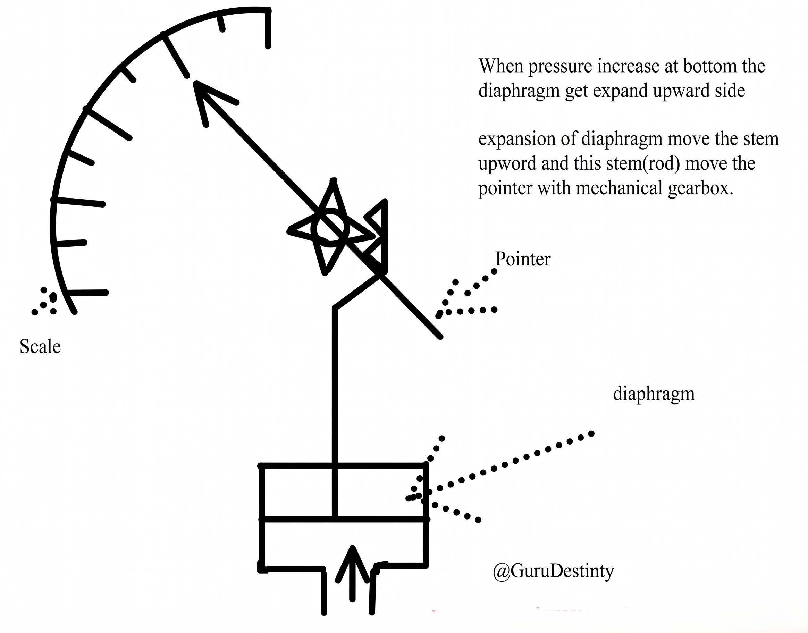
5.3 Bellows Pressure Sensor
الـ Bellows Elastic Element بيشبه الـ Tube ذات الطيات أو التموجات المتتابعة. لما الـ Pressure بيأثر داخل الـ Bellows أو خارجه، بينتج Pressure Difference يغيّر طوله؛ يعني بيتمدد أو بينكمش حسب اتجاه الـ Pressure وترتيب الجهاز، فبيدي Mechanical Displacement أكبر نسبيًا من الـ Diaphragm. الـ Linear Motion ممكن تتربط بـ Mechanical Mechanism لتحريك Pointer أو لنقل الـ Displacement لـ Element تاني. الطيات بتسمح للـ Element يغيّر طوله تحت تأثير الـ Pressure، لكن شكل الطيات وعددها وأبعادها وخواص المادة كلها بتأثر في مقدار الحركة والاستجابة؛ فاختلاف الـ Design بيغيّر الـ Sensitivity ومدى الـ Pressure.
Limitations: الـ Bellows Elastic Element، فلازم نراعي الـ Mechanical Limits بتاعته وخصائصه الـ Dynamic؛ وما ينفعش نفترض إنه مناسب تلقائيًا للـ Pressure المتغير بسرعة لمجرد إنه متصل بـ Pointer أو بـ Electrical Circuit.
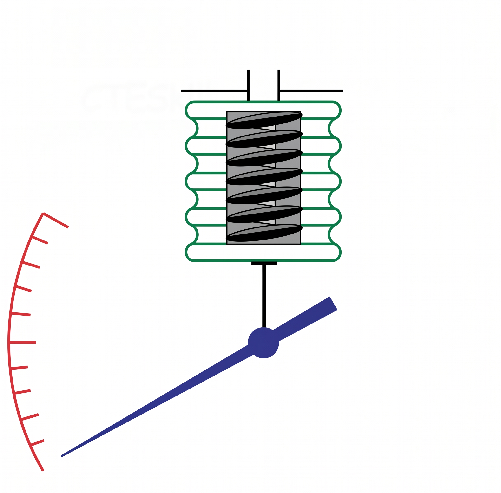

في بعض الأنظمة، حركة الـ Bourdon Tube أو الـ Diaphragm أو الـ Bellows مش بتُستخدم لتحريك Pointer بس، لكن ممكن الـ Displacement ينتقل لـ Electrical Element. مثلًا ممكن الـ Mechanical Motion تحرك جزء في Resistive Sensor فتتغير الـ Electrical Resistance، وبعد كده نقيس الـ Electrical Change ونربطه بالـ Pressure بعد الـ Calibration. والتسلسل هنا:
لكن وجود Electrical Output لا يعني إن الجهاز بقى خالي من الـ Mechanical Limitations؛ لأن الـ Sensing Element لسه بيعتمد على الـ Deformation والحركة. ولهذا السبب لازم نميّز بين الـ Sensing Element (الـ Element اللي بيتأثر بالـ Pressure)، وعنصر تحويل الـ Displacement إلى Electrical Signal، وبين الـ Signal Processing Circuit.
Static vs. Dynamic Pressure Measurement: أجهزة الـ Mechanical Measurement اللي بتعتمد على Deformation لـ Elastic Element بتكون مناسبة غالبًا للـ Static Pressure أو للـ Pressure المتغير ببطء، بحسب الـ Design. في الـ Dynamic Measurement الـ Pressure بيتغير مع الزمن، فمش كفاية نعرف العلاقة بين الـ Pressure والـ Displacement عند الـ Equilibrium؛ لازم كمان نعرف الـ Response Speed بتاعة الجهاز. ولو الـ Pressure اتغير بسرعة أكبر من قدرة الـ Element والـ Mechanism على الاستجابة، ممكن الـ Reading تتأخر عن القيمة الفعلية. وعند اختيار جهاز Pressure لازم نسأل:
- هل المطلوب Static Pressure ولا Pressure متغير بسرعة؟
- إيه الـ Expected Pressure Range؟
- إيه مقدار الـ Accuracy المطلوب؟
- هل نحتاج Mechanical Readingة مباشرة ولا Electrical Signal؟
- هل الجهاز مصمم لتحمل الـ Pressure المطلوب من غير تجاوز حدود الـ Elastic Element؟
Comparison of the Three Mechanical Sensing Elements
| Elastic Element | Physical Working Principle | Typical Purpose | Displacement & Sensitivity | Main Limitation |
|---|---|---|---|---|
| Bourdon Tube | Deformation of a curved elastic tube | قياس الـ Pressure وتحريك Mechanical Pointer | Displacement متوسط (Sensitivity متوسطة) | للـ Static Pressure فقط حسب السلايد؛ حدود الـ Elastic Limit والـ Mechanical Errors، ويتأثر بالـ Plastic Deformation |
| Diaphragm | Deflection of a flexible membrane | قياس الـ Pressure أو الـ Pressure Difference | Displacement صغير جدًا (Sensitivity عالية للـ Low Pressures) | بيتأثر بالـ Design وحدود الـ Elastic Limit؛ وصعب يتحمل الـ Overpressure |
| Bellows | Expansion or contraction of a folded elastic element | تحويل الـ Pressure إلى Mechanical Displacement | Linear Displacement كبير نسبيًا | حدود الـ Elastic Element والـ Dynamic Response (فيه Mechanical Inertia واستجابة بطيئة) |
6. Electrical Pressure Sensors: Overview
Electrical Pressure Sensors: Molecular vs. Parametric Transducers"Pressure sensors provide an electric output that depends on the input pressure."
الـ Pressure Sensor هو Sensor بيستجيب للـ Pressure الواقع عليه، وبيحوّل تأثير الـ Pressure إلى Electrical Change يمكن قياسه. لما الـ Pressure يتغير بيحصل تأثير على الـ Sensing Element، وهو الجزء الحساس الموجود داخل الـ Sensor، والتأثير ده بيؤدي إلى تغير في Electrical Property، فنقدر نلاحظ التغير من خلال الـ Electrical Circuit المتصل بيها الـ Sensor. بمعنى إن الـ Pressure بيأثر أولًا على الجزء الحساس نفسه، وبعد كده بيظهر تأثيره في الـ Electrical Output للـ Sensor.
الدكتور وضّح إن فيه نوعين أساسيين من الـ Pressure Sensors الفرق بينهم في طبيعة الـ Electrical Change الناتج عن الـ Pressure: Piezoresistive Sensor وPiezoelectric Sensor (وبنشرحهم في Section 7). وطبقًا للسلايدات، الـ Electrical Pressure Sensors بتتقسم لـ Molecular Sensors وParametric Sensors:
"The applied input pressure produces a change in a certain electric property of the sensor material itself."
الـ Pressure بيأثر مباشرةً على الـ Crystal Structure أو الـ Molecular Structure لمادة الـ Sensor نفسها (زي توليد Charge في الـ Quartz، أو تغير الـ Resistivity في الـ Semiconductors).
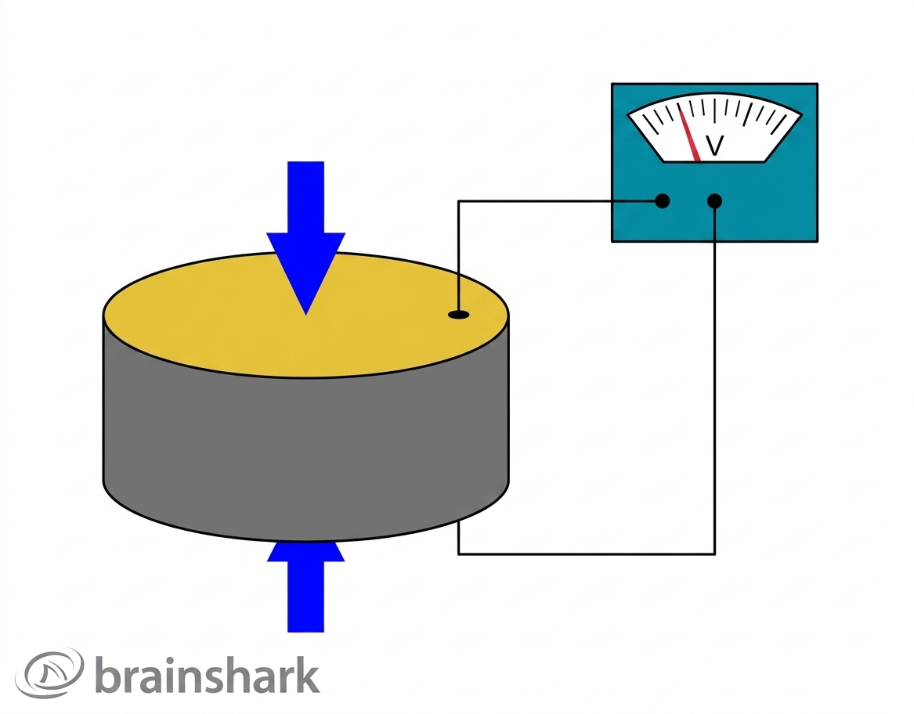
"The applied input pressure causes a change in a certain electric property of an electric circuit."
الـ Pressure بيحرك Mechanical Element وينتج Displacement، والـ Displacement ده بيغيّر أحد Parameters الـ Electrical Circuit الخارجية (الـ Resistance \( R \)، أو الـ Inductance \( L \)، أو الـ Capacitance \( C \)).

أثناء شرح الرسومات، الدكتور وضّح إن الـ Pressure ممكن يأثر على الجزء الحساس فيؤدي لحدوث حركة أو Displacement. يعني الـ Pressure ممكن يؤدي لتحرك الجزء الحساس، وبعد كده بنستفيد من الحركة دي في الحصول على Electrical Change أو Electrical Signal. إذن في بعض تصميمات الـ Sensors بيكون عندنا التسلسل ده:
أي إن الـ Pressure يؤدي إلى Displacement، والـ Displacement بيتحول إلى Electrical Signal يمكن قياسها.
"Both molecular and parametric sensors produce an electric output which is proportional with the applied pressure. The molecular sensors are much more suitable in cases of dynamic pressure measurements."
السبب: الـ Molecular Sensors مفيهاش Mechanical Parts ثقيلة بتتحرك مسافات كبيرة؛ فالـ Inertia بتاعها مهملة والـ Natural Frequency عالي جدًا، وده بيخليها مناسبة للـ Pressure المتغير بسرعة كبيرة والانفجارات والنبضات.
7. Molecular Sensors: Piezoelectric & Piezoresistive
Molecular Sensors: Charge Generation & Bulk Resistivity Change7.1 Piezoelectric Sensor
"Piezo-electric elements are bi-directional transducers capable of converting the pressure into an electric charge."
"Polarized crystalline structures like quartz generate a small electric charge (High O/P electric impedance) when a dynamic pressure is applied on them. (Amplifier is a must). The charge quantity is proportional to the applied pressure. The charge polarity depends on the force direction. Provide an output only if the applied pressure varies with time (Dynamic Pressure Measurements — frequent input)."
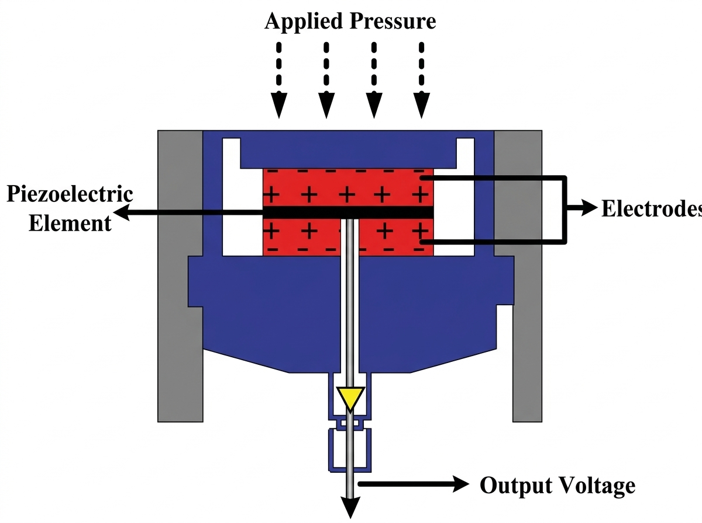

النوع التاني هو الـ Piezoelectric Sensor، وبيختلف عن الـ Piezoresistive Sensor؛ لأن الفكرة هنا مش إن الـ Pressure يغيّر الـ Resistance، لكن إن الـ Pressure الواقع على مادة معينة يؤدي إلى توليد Electric Charge. الـ Piezoelectric Effect هو التأثير اللي بيحصل لما نضغط على مادة Piezoelectric فتتولد Electric Charges نتيجة الـ Pressure الواقع عليها. يعني:
- بنطبق Pressure على المادة.
- المادة بتستجيب للـ Pressure.
- نتيجة الـ Pressure، بيتولد Electric Charge.
- الـ Charge الناتجة ممكن نستفيد منها في الحصول على Electrical Signal.
حيث \( d \) هو الـ Piezoelectric Coefficient.
اتجاه الـ Pressure والـ Charge الناتجة: الدكتور أشار إن اتجاه الـ Pressure له تأثير على الـ Charge الناتجة، وإن تغيير اتجاه الـ Force أو الـ Pressure ممكن يؤدي لاختلاف اتجاه أو Polarity الـ Charge المتولدة. وكمان قيمة الـ Charge الناتجة مرتبطة بالـ Pressure المؤثر على المادة.
المواد المستخدمة: اتذكر أثناء الشرح مثال الـ Quartz Crystal، وهو من المواد المرتبطة بخاصية الـ Piezoelectric Effect؛ والفكرة من المثال إن فيه مواد معينة بتستجيب للـ Pressure بتوليد Electric Charge.

من أهم النقاط اللي أكد عليها الدكتور إن الـ Piezoelectric Sensor بيعتمد على تغير الـ Pressure، يعني مناسب للـ Dynamic Pressure: المقصود إن الـ Pressure يكون متغير، يزيد أو يقل، مش مجرد Pressure ثابت مستمر. أما في حالة الـ Static Pressure فالـ Sensor مش بيدي Output مستمر بنفس الصورة المطلوبة لقياس الـ Static Pressure؛ لأن مبدأ عمله مرتبط بتغير الـ Pressure وتوليد الـ Charge نتيجة التغير ده. إذن لازم نفرّق بين:
- Dynamic Pressure: Pressure متغير، وهو المناسب للـ Working Principle بتاع الـ Piezoelectric Sensor.
- Static Pressure: Pressure ثابت، ولا يناسب النوع ده لقياسه بصورة مستمرة.
7.2 Piezoresistive Sensor
"Certain materials change their resistances with the applied pressure. The sensor is made part of Wheatstone Bridge. The output is signal conditioned (amplified, filtered, converted into digital) and then displayed or recorded."
الـ Piezoresistive Sensor هو Sensor بيعتمد على تغير الـ Electrical Resistance نتيجة تعرض المادة أو الـ Sensing Element للـ Pressure. يعني لما نطبق Pressure على الـ Sensing Element، بيحصل تغير في حالته أو شكله، وده بيؤدي لتغير قيمة الـ Electrical Resistance. إذن الفكرة الأساسية:
- بنطبق Pressure على الـ Sensor.
- الـ Pressure بيأثر على الـ Sensing Element.
- نتيجة التأثير ده، قيمة الـ Resistance بتتغير.
- التغير في الـ Resistance بيظهر في الـ Electrical Circuit، ونقدر نستخدمه في قياس الـ Pressure.
والدكتور وضّح إننا بنستفيد من الخاصية دي في تصميم الـ Sensor؛ لأننا نقدر نربط بين قيمة الـ Pressure الواقع على الـ Sensor والتغير اللي حصل في الـ Resistance.
توضيح الرسم: الـ Pressure هو الـ Input، بيأثر على الـ Sensor Element وقد يحدث له تغير أو Deformation، ونتيجة ده قيمة الـ Resistance بتتغير. المهم نفهم العلاقة بين الـ Input Pressure والتغير في الـ Resistance؛ أما اتجاه التغير في الـ Resistance (زيادة ولا نقصان) فمش واضح بما يكفي علشان نعممه على كل الحالات.

في الـ Piezoresistive Sensor الـ Pressure بيؤدي إلى تغيير قيمة الـ Resistance، والتغير ده في الـ Resistance بنقدر نربطه بقيمة الـ Pressure. وعلشان كده، حسب Design الـ Sensor، ممكن نستخدمه لقياس الـ Static Pressure كمان؛ عكس الـ Piezoelectric Sensor اللي الـ Pressure فيه بيؤدي إلى توليد Electric Charge ومناسب للـ Dynamic Pressure. إذن الفرق الأساسي بين النوعين: في الـ Piezoresistive الـ Pressure بيغيّر الـ Resistance، وفي الـ Piezoelectric الـ Pressure بيؤدي إلى توليد Electric Charge.
Detailed Comparison: Piezoelectric vs. Piezoresistive
| Comparison Point | Piezoelectric Sensor | Piezoresistive Sensor |
|---|---|---|
| Working Principle | توليد Electric Charge نتيجة الـ Pressure | تغير قيمة الـ Electrical Resistance للـ Sensing Element |
| Effect of Pressure | بيؤدي إلى توليد Electric Charge | بيغيّر قيمة الـ Resistance |
| Changing Property | Electric Charge (Q) | Resistance (R) |
| Nature of Measurement | بيعتمد على تغير الـ Pressure وتوليد الـ Charge | بيعتمد على تغير الـ Resistance مع الـ Pressure |
| Material | Quartz Crystal وPiezoelectric Ceramics | Doped Semiconductors وSilicon |
| Associated Circuit | Charge Amplifier بـ Input Impedance عالية | Wheatstone Bridge + Voltage Amplifier |
| Suitability for Static Pressure | ❌ ما يناسبش قياس الـ Static Pressure المستمر | ✅ ممكن استخدامه لقياس الـ Static Pressure حسب Design الـ Sensor |
| Suitability for Dynamic Pressure | ✅ مناسب جدًا للـ Dynamic Pressure | بيعتمد على استجابة الـ Circuit وDesign الـ Diaphragm |
8. Parametric Sensors
Parametric Sensors: Resistive, Inductive (LVDT) & Capacitive Transducers"Provide a physical displacement that is connected to electric sensors which convert this displacement into an electrical output. All except diaphragms provide relatively large physical displacement."
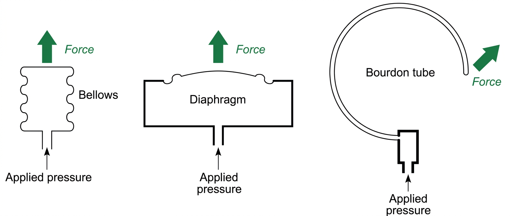
الـ Parametric Sensors بتعتمد على مرحلتين من التحويل:
بعد شرح أنواع الـ Sensors، انتقل الدكتور لتصنيف الـ Transducers حسب الـ Electrical Property اللي بتتغير داخل الـ Circuit. ذكر إن عندنا ثلاثة أنواع أساسية، والاختلاف بينهم بيكون في الـ Electrical Parameter اللي بيتغير: Resistance Transducer وInductance Transducer وCapacitance Transducer. احفظ إن التصنيف ده قائم على السؤال التالي: What is the electrical parameter that changes? يعني إيه الـ Electrical Parameter اللي بيتغير نتيجة المؤثر الخارجي؟ والإجابة بتكون واحدة من ثلاثة: Resistance أو Inductance أو Capacitance.
8.1 Resistance Transducer
الـ Resistance Transducer هو نوع من الـ Transducers بيعتمد على حدوث تغير في قيمة الـ Electrical Resistance. يعني لما المؤثر الخارجي يأثر على الـ Sensor، قيمة الـ Resistance بتتغير، وبنستفيد من التغير ده في الـ Measurement، وده نفس المبدأ اللي اتشرح قبل كده في الـ Piezoresistive Sensor. وفي الرسم، الـ Displacement الناتج عن الـ Bellows أو الـ Bourdon Tube بيتوصل بـ Potentiometer أو ذراع بيغيّر الـ Resistance في Measuring Bridge. الـ Electrical Parameter اللي بيتغير: Resistance.

8.2 Inductance Transducer & LVDT
الـ Inductance Transducer هو نوع بيعتمد على تغير قيمة الـ Inductance داخل الـ Electrical Circuit؛ يعني بدل ما الـ Electrical Property اللي بتتغير تكون الـ Resistance، هنا الخاصية اللي بتتغير هي الـ Inductance. والدكتور أشار إن الـ Mechanical Displacement ممكن يؤدي لتغير في الـ Inductance، وبالتالي يحصل Electrical Change نقدر نستفيد منه في الـ Measurement. الـ Electrical Parameter اللي بيتغير: Inductance.
LVDT: أثناء مراجعة الرسومات، الدكتور أشار لرسم خاص بالـ LVDT وذكر الاسم الكامل Linear Variable Differential Transformer، وهو مرتبط بقياس الـ Displacement أو الـ Position. وأشار إن الرسومات الثلاثة اللي كان بيراجعها بتمثل أمثلة مختلفة: الأول LVDT، والتاني Resistance Transducer، والتالت Capacitance Transducer. أما تفاصيل تركيب الـ LVDT وطريقة عمله من جوه فما اتشرحتش بالتفصيل، فبنكتفي بما ذكره الدكتور عن اسمه وارتباطه بقياس الـ Displacement والـ Position.
من الرسم: الـ LVDT فيه Primary Coil وSecondary Coils وMagnetic Core متصل بالـ Bellows؛ وعند تغير الـ Pressure بيتحرك الـ Core فيغيّر الـ Mutual Inductance بين الـ Coils، وينتج Differential AC Voltage بيتناسب مع موضع الـ Core.
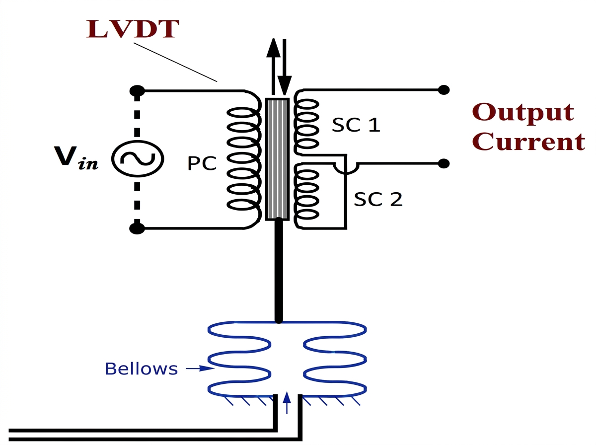
8.3 Capacitance Transducer
الـ Capacitance Transducer بيعتمد على تغير قيمة الـ Capacitance. ولفهم النوع ده لازم نعرف الأول إن الـ Capacitor بيتكون من Two Conducting Plates يفصل بينهم Dielectric Material. قيمة الـ Capacitance بتعتمد على ثلاثة عوامل أساسية:
- Area: الـ Area بتاعة الـ Plates.
- Distance: الـ Distance بين الـ Plates.
- Dielectric Material: نوع الـ Dielectric Material الموجود بين الـ Plates.
وبالتالي لو حصل تغير في الـ Distance بين الـ Plates، قيمة الـ Capacitance هتتغير. الـ Electrical Parameter اللي بيتغير: Capacitance.
Where: \( A \) = Area of overlapping plates, \( d \) = Distance between plates, \( \varepsilon \) = Dielectric permittivity.

في نهاية المحاضرة، رجع الدكتور لشرح رسم الـ Capacitive Pressure Sensor بالتفصيل. الرسم قائم على وجود Two Plates بينهم Distance معينة، وبالتالي بيكون بينهم Capacitance. أحد الـ Plates ثابت (Fixed Plate)، والـ Plate التاني ممكن يتحرك نتيجة تأثير الـ Pressure. خطوات عمل الـ Sensor:
- بيتطبق Pressure على الـ Sensor، وده هو الـ Input Pressure.
- الـ Pressure بيأثر على الجزء المتحرك أو الـ Diaphragm.
- نتيجة الـ Pressure، بيحصل انحراف أو حركة في الجزء المتحرك.
- الحركة بتؤدي إلى تغير الـ Distance بين الـ Plates.
- بما إن الـ Capacitance بتعتمد على الـ Distance بين الـ Plates، فقيمتها بتتغير.
- بنستفيد من التغير في الـ Capacitance في قياس الـ Pressure.
وفي الرسم اللي اتشرح، التركيز كان على تغير الـ Distance بين الـ Plates نتيجة الـ Pressure؛ وده هو الأساس اللي بيعتمد عليه الـ Capacitive Pressure Sensor.
Comparison of the Three Parametric Transducer Types
| Transducer Type | Changing Property | Mechanism of the Displacement Effect | Notable Engineering Advantage |
|---|---|---|---|
| Resistance Transducer | Resistance (R) | حركة Slider على Resistance Wire أو Strain في شريحة | بساطة الـ Circuits وإمكانية التغذية بـ DC Voltage |
| Inductance Transducer (LVDT) | Inductance (L) | حركة Magnetic Core بتغيّر الـ Mutual Inductance | Mechanical Friction منعدم تقريبًا وعمر تشغيلي طويل جدًا |
| Capacitance Transducer | Capacitance (C) | تغير الـ Distance بين الـ Plates \( d \) | Sensitivity فائقة واستجابة ممتازة للـ Micro Displacements الدقيقة |
9. Pressure Measurement in Flow Fields
Static Pressure, Dynamic Pressure & Total (Stagnation) Pressure- Static Pressure (\( P_s \)): "Indicates the local fluid pressure when fluid is at rest or moving. Measured parallel to flow direction with no disturbance (Static Probe or wall tap)."
- Dynamic Pressure (\( P_d \)): "Pressure induced due to fluid motion and velocity: \( P_d = \frac{1}{2}\rho V^2 \)."
- Total / Stagnation Pressure (\( P_{tot} \)): "The summation of the static and dynamic pressures, measured by bringing fluid isentropically to rest at the stagnation point (Pitot Probe)."

الـ Static Pressure \( p \) هو الـ Pressure اللي بنربطه بحالة الـ Fluid عند النقطة، مش بمجرد الـ Velocity وحدها. والـ Dynamic Pressure في سياق الـ Incompressible Flow بيُعرّف عادةً بـ \( q = \frac{1}{2}\rho V^2 \)، حيث \( \rho \) هي الـ Density و\( V \) هي الـ Velocity. أما الـ Total Pressure \( p_0 \) ففي الحالة المثالية المناسبة لـ Bernoulli\'s Equation، ومع إهمال فروق الـ Height وفواقد الـ Energy، بيساوي \( p_0 = p + \frac{1}{2}\rho V^2 \)؛ أي إن الـ Total Pressure بيساوي الـ Static Pressure مضافًا إليه الـ Dynamic Pressure.
مهم: العلاقة دي بتخص الشروط المذكورة، مش Rule نستخدمها من غير مراعاة فرق الـ Height وفواقد الـ Energy. ولصحة تطبيق \( P + \frac{1}{2}\rho V^2 = \text{constant} \) لازم تتوفر الشروط الستة الإلزامية:
- Inviscid Flow: الـ Fluid عديم الـ Viscosity (إهمال Friction Forces والـ Internal Shear).
- Steady Flow: الخواص ما بتتغيرش مع الزمن عند أي نقطة.
- Along a Streamline: التطبيق على طول Streamline واحد.
- Incompressible Flow: الـ Density \( \rho \) ثابتة.
- No Shaft Work: مفيش Mechanical Work مضاف أو مستخرج (مفيش Pump أو Turbine في مسار الـ Measurement).
- No Heat Transfer: مفيش Heat Transfer عبر حدود الـ Flow.
Topic: Pitot-Static Tube Velocity Calculation
(This is an additional application of the lecture’s formula. It was not mentioned in the lecture or provided by the professor. View it only if you would like to see how to apply the formula.)
Step-by-step solution
Relevant formula: \[ P_{tot} = P_s + P_d\ \Rightarrow\ P_d = P_{tot} - P_s \]Substitution and calculation: \[ P_d = 106{,}200 - 101{,}300 = 4{,}900\ \text{Pa} \]
Relevant formula: \[ P_d = \tfrac{1}{2}\rho V^2\ \Rightarrow\ V = \sqrt{\frac{2P_d}{\rho}} \]Substitution and calculation: \[ V = \sqrt{\frac{2 \times 4{,}900}{1.225}} = \sqrt{8{,}000} \approx 89.44\ \text{m/s} \]
Relevant formula: \[ 1\ \text{m/s} = 3.6\ \text{km/h} \]Substitution and calculation: \[ V = 89.44 \times 3.6 \approx 322.0\ \text{km/h} \]
10. Comprehensive Comparison Table & Question Bank
Comprehensive Transducer Comparison & Interactive Question BankComprehensive Comparison of All Pressure Measurement Devices
| Device | Physical Principle | Main Use | Main Limitation |
|---|---|---|---|
| Barometer | Equilibrium بين Liquid Column والـ Atmospheric Pressure | قياس الـ Atmospheric Pressure والتنبؤ بالطقس | قياس مرجعي Static للـ Atmospheric Pressure فقط |
| Manometer | Hydrostatic liquid column | قياس الـ Pressure أو الـ Pressure Difference من فرق الـ Height | استجابة بطيئة نسبيًا وحجم عملي كبير عند الـ High Pressures؛ مدى عملي لا يتجاوز عادةً 7 bar |
| Dead Weight Tester | Known force divided by effective area | الـ Calibration لأجهزة الـ Pressure كـ Primary Standard | مناسب أساسًا للـ Static Calibration، ويتأثر بـ Piston Friction |
| Bourdon Tube | Deformation of a curved elastic tube | قياس الـ Pressure وتحريك Mechanical Pointer | حدود الـ Elastic Limit والـ Mechanical Errors؛ للـ Static Pressure فقط |
| Diaphragm | Deflection of a flexible membrane | قياس الـ Pressure أو الـ Pressure Difference | بيتأثر بالـ Design وحدود الـ Elastic Limit؛ Displacement صغير جدًا |
| Bellows | Expansion or contraction of a folded elastic element | تحويل الـ Pressure إلى Mechanical Displacement | حدود الـ Elastic Element والـ Dynamic Response |
| Piezoelectric | توليد Electric Charge | الـ Dynamic Pressure المتغير | ما يناسبش الـ Static Pressure المستمر، ومحتاج Amplifier |
| Piezoresistive | تغير الـ Electrical Resistance | الـ Static والـ Dynamic Pressure حسب Design الـ Sensor | محتاج Wheatstone Bridge وTemperature Compensation |
| Parametric (R, L, C) | Mechanical Displacement بيغيّر Parameter الـ Circuit | أنظمة المراقبة والـ Electronic Control عن بُعد | بيعتمد على Mechanical Element وسيط (زي الـ Bellows أو الـ Diaphragm) |
• في Molecular Sensors: الـ Pressure المطبق بيؤدي مباشرةً إلى تغير Electrical Property داخل مادة الـ Sensor نفسها على الـ Molecular Level أو الـ Crystal Level (زي توليد الـ Charge في الـ Piezoelectric أو تغير الـ Resistivity في الـ Piezoresistive)، وبتتميز باستجابة Dynamic سريعة جدًا لانعدام الـ Moving Mechanical Parts الكبيرة.
• في Parametric Sensors: الـ Pressure بيأثر أولًا على Elastic Element (زي الـ Diaphragm أو الـ Bellows) فيولّد Displacement، والـ Displacement ده بيحرك أجزاء داخل Electrical Circuit لتغيير Electrical Parameter زي الـ Resistance \( R \) أو الـ Inductance \( L \) (في الـ LVDT) أو الـ Capacitance \( C \).
لأن الـ Piezoelectric Sensor بيعتمد على تغير الـ Pressure، يعني مناسب للـ Dynamic Pressure بس؛ فمبدأ عمله مرتبط بتغير الـ Pressure وتوليد الـ Charge نتيجة التغير ده. في حالة الـ Static Pressure الثابت المستمر الـ Sensor مش بيدي Output مستمر بنفس الصورة المطلوبة لقياس الـ Static Pressure. علشان كده هو مخصص لـ Dynamic Pressure Only.
(أ) Inclined Manometer: الغرض منه To increase sensitivity عند قياس Small Pressure Differences؛ لأن الـ Vertical Height \( h \) الصغير بيتحول إلى Reading أطول \( L \) على امتداد الـ Tube المائلة حسب \( L = h / \sin\theta \).
(ب) Well-Type Manometer: الغرض منه تقليل تأثير تغير مستوى الـ Reservoir على الـ Reading، أو تعويضه في الـ Scale؛ فبفضل Area الـ Well الكبيرة بيبقى تغير المستوى فيه Negligible وبنقدر ناخد الـ Reading من Tube واحدة، وده بيقلل الاعتماد على قراءة مستويين.
العوامل الثلاثة حسب \( C = \frac{\varepsilon A}{d} \):
1. Area: الـ Area بتاعة الـ Plates (\( A \)).
2. Distance: الـ Distance بين الـ Plates (\( d \)).
3. Dielectric Material: نوع الـ Dielectric Material بين الـ Plates (\( \varepsilon \)).
Working Principle: فيه Fixed Plate وPlate تاني متحرك: \( \text{Pressure} \rightarrow \text{Diaphragm Movement} \rightarrow \text{Change in Distance} \rightarrow \text{Change in Capacitance} \)؛ يعني الـ Pressure بيحرك الـ Diaphragm، فبتتغير الـ Distance بين الـ Plates، وبما إن الـ Capacitance بتعتمد على الـ Distance فقيمتها بتتغير ونستفيد منها في قياس الـ Pressure.
1. Friction between piston and cylinder: الـ Friction بين الـ Piston والـ Cylinder بتقلل Accuracy الـ Force المؤثرة، وبيتطلب تدوير الـ Piston لتخفيفها.
2. Poor dynamic response: جهاز لـ Static calibrations only، ومش بيقيس تغيرات الـ Pressure مع الزمن.
3. Uncertainty in gravitational constant ( g ): بيتأثر باختلاف الـ Local Gravity من مكان لمكان ويحتاج Correction حسب الموقع.
(Slide 33):
1. Inviscid flow: الـ Fluid عديم الـ Viscosity وخالي من الـ Internal Friction.
2. Steady flow: الخواص ما بتتغيرش مع الزمن.
3. Along a streamline: التطبيق على امتداد Streamline واحد.
4. Incompressible flow: الـ Density ثابتة.
5. No shaft work: مفيش Pump أو Turbine في مسار الـ Measurement.
6. No heat transfer: مفيش Heat Transfer من أو إلى مجرى الـ Flow.